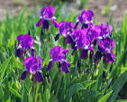
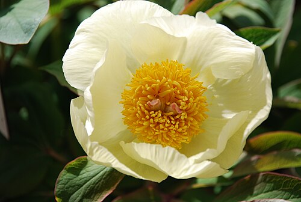
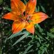
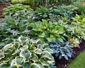
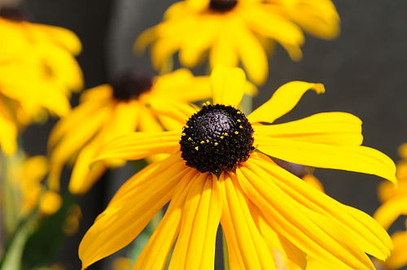
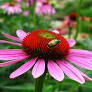
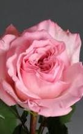

Зміст

Іриси, або народні «півники»
— це багаторічні рослини з родини півникових, назва яких походить від грецького слова «веселка» через різноманіття кольорів.
Півонії
— це багаторічні трави (більшість видів), а також кущі або півкущі (бл. 10 видів).
Лі́лія бі́ла (Lilium candidum, ще одна поширена з англ. мови назва Мадонна;)
— багаторічна цибулинна рослина, один з видів роду лілія (Lilium) родини лілійних. Це єдиний вид з середземноморським типом розвитку.
Хоста
— це багаторічна трав'яниста рослина, яка цінується перш за все за декоративне листя, але також має квіти. Квіти хости з'являються влітку, зазвичай з кінця червня до серпня, мають форму дзвоника і бувають білого, лілового або фіолетового кольору.
Рудбе́кія (Rudbeckia)
— рід однорічних, дворічних та багаторічних трав'янистих рослин родини айстрові (Asteraceae), включає близько 40 видів. Типовим видом вважається Rudbeckia hirta L.
Ехінацея
— це багаторічна трав'яниста рослина з великими квітками, схожими на ромашку, які бувають різних кольорів, найчастіше рожевих, червоних або білих. Ця рослина є популярною як у садівництві, так і в народній медицині завдяки своїм декоративним властивостям та імуностимулювальним ефектам.
Троя́нда, шипши́на(Rosa L.)
— рід і культурна форма рослин родини трояндових (дикорослі — див. Шипшина), листопадні, рідко вічнозелені кущі до 4 метрів заввишки.